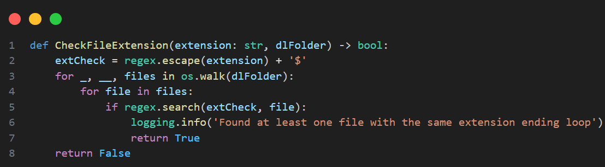
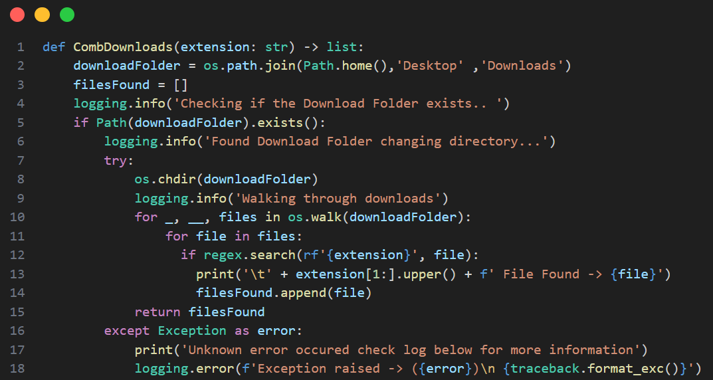
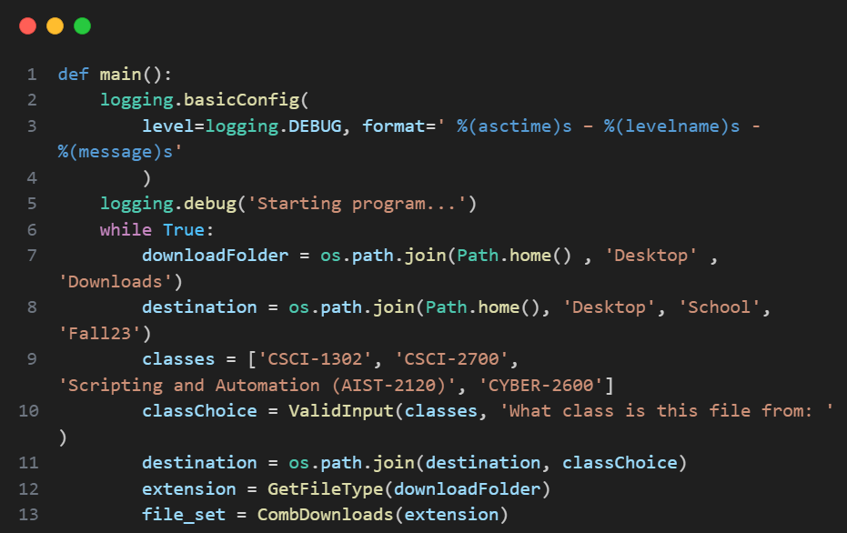
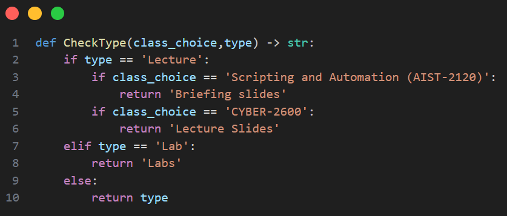
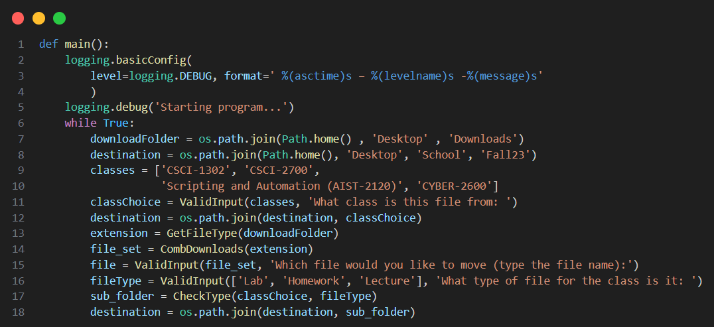
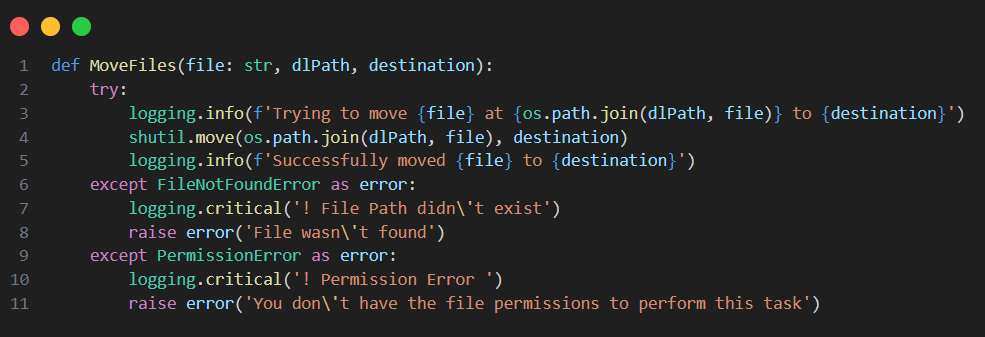
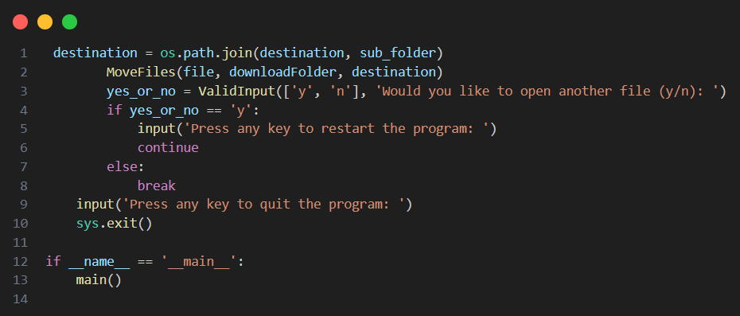

For most of us, file organization is one of the tedious tasks and mind-numbing tasks we do almost every day on our computer. As a full-time student, I organize my schoolwork in multiple directories and often find myself spending time a lot of time moving course-related files from my downloads folder to the courses-associated directory. With this in mind, we create our program with the goal of creating a file organizer designed to move course-related files from my download’s directory to the associated course directory and then to the related sub-directory to categorize the file. After finishing this program I’ve been able to automate this task by creating a Command Line Interface to do it for me. Anyone well versed in IT and Cyber Security knows how much faster a command line is than using a GUI and the same concept applies to file organization.
The program we’ll be making will take input from the user (who in this case will be ourselves) to get information to generate the destination path for the file we want to move. The first piece of information we need is the file path of the file we want to move and then the file path of where we want to move our file. For this program, we will need to import several Python modules to interact with our operating system and also the files on it. To this we’ll import the OS module to interact with our operating system, Path from the pathlib module, and the Shutil Module. For debugging purposes and to get accurate debugging information we will additionally import the logging and traceback modules which will help us a lot when we are error testing our program. Lastly, we will want a good amount of error checking each time we receive input from our user. Now it may seem redundant to include input validation considering we are the end user; however, we must also consider the volatile nature of working with files and the possibility of a typo. So, in order to protect the file structure of our Operating System and to validate input we will use Regular Expressions from the re module to do so.
Now that we’ve imported all the modules we need, let’s start writing our main routine and adding our cookie cutter ‘if name == main’ check for our script. First and foremost, let’s configure our logging settings and then start a while loop that will hold everything in our main routine. After that we will define the path to our download folder (the folder containing the file we want to move) and then the start of the subsequent destination folder.
Considering we will be relying heavily on user input we should create a function that will do that for us anytime we receive input from the user. There are many ways to validate a user with a function and for this program I opted to use a while loop and a list to check if the user’s input is in the list of the aptly named ‘options’ parameter. After we’ve created our function we’ll use it to prompt the user for what class the file in question using the previously defined classes variable that contains the directory names of my courses.
We’ll use that to update our destination path with os.join().
In order to avoid bombarding our user with files and to be more specific, we’ll need to ask them for the extension of the file. To accomplish this, we will need to create another function that uses a regular expression to ensure the user enters a valid file extension.
However, we need a way of checking that the file extension provided by our user is present in at least one of the files in our Download folder as it would create issues later in the program. To do this we’ll create a function that returns a Boolean (true or false) that will run inside of the function where we ask our user for a file extension.
This function which I’ve named ‘CheckFileExtension’ takes 2 parameters the user input containing the file extension we are looking for as well as the file path of our Downloads directory. We’ll walk through the Downloads directory and use a regex to check the list of files contained in the last index of the tuple returned by os.walk() for files with the user extension and return True if at least one is found and False if none are found.
Now that we have our CheckFileExtension function to provide additional input validation, we can create our function to get the file type we’ll call GetFileType from our user similar to how we did in the last method. We’ll loop until our user provides a file extension that is valid and also exists on our Download directory performing the second check by utilizing the Boolean value returned from our previous method. Although these checks are tedious they ensure that our program will always perform as intended and in turn a better user experience. o ensure that exists in our download folder beforehand so we can re-prompt the user if the file extension doesn’t After we receive our file extension from the user, we then need to walk through our Downloads folder to find all files with the same extension to display to the user.
Now that we have all the information, we need to find the files matching the extension our user provided in our Download directory. We can do this in a method we’ll call ‘CombDownloads’ that takes a single parameter; that being the file extension we have worked so tirelessly to get from our user. This function will return a list containing all of the files with the extension of our parameter. I opted to return a list containing the file names so we could use them to validate input using our ValidInput function later.
Let’s go back to our main routine and implement the functions we’ve created so far.
From here we could simply prompt our user for the file they’d like to move into the directory of the class they picked however the issue of file organization would still remain which is why I opted to ‘classify’ files by category in my course’s directory. In each of my course’s directories are sub-directories for Labs, Lecture Slides, and Homework to stay organized. With this in mind, we’ll use our previously defined ValidInput function to prompt our user for the files category which we’ll use to adjust our destination path. Considering the names of the sub-directories in each of my courses can vary, we’ll use a series of if statements to determine the sub-directory name using previous input from the user.
Now with the sub-directory name in hand, we’ll ask our one last time user for the name of the file they’d like to and use our ValidInput function to ensure they pick a file from the list of files we got from the CombDownloads function. After getting our file name we have all the information we need to move the file.
We’ll do this in a function named MoveFiles which will take 3 parameters the file name, the downloader directory path, and the destination directory. With this information, we’ll use the Shutil module and the parameters to specify the path of the file we want to move to as well as the path we want our file to be moved to. To be thorough in our error checking as well we’ll also wrap our code in a try block to catch any unaccounted-for errors that may occur.
With our final function created, we can move the user's file in our main routine, which now looks a little like this.
I added some extra lines of code which asks if the user would like to move another file however, that isn’t necessary and exists as a quality-of-life feature. With our program complete all that’s left is to try different test cases to test your program which should be pretty easy as I've included logs each step of the way.